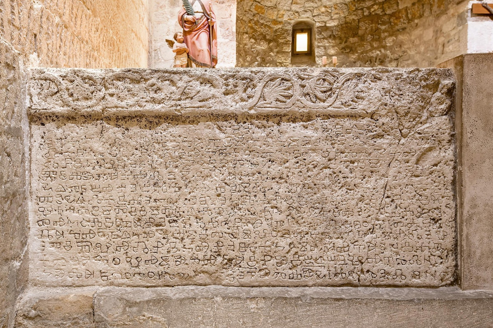
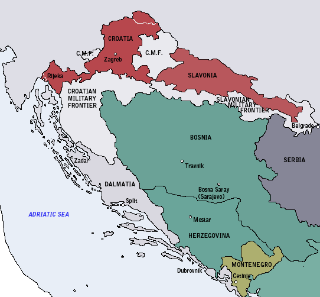
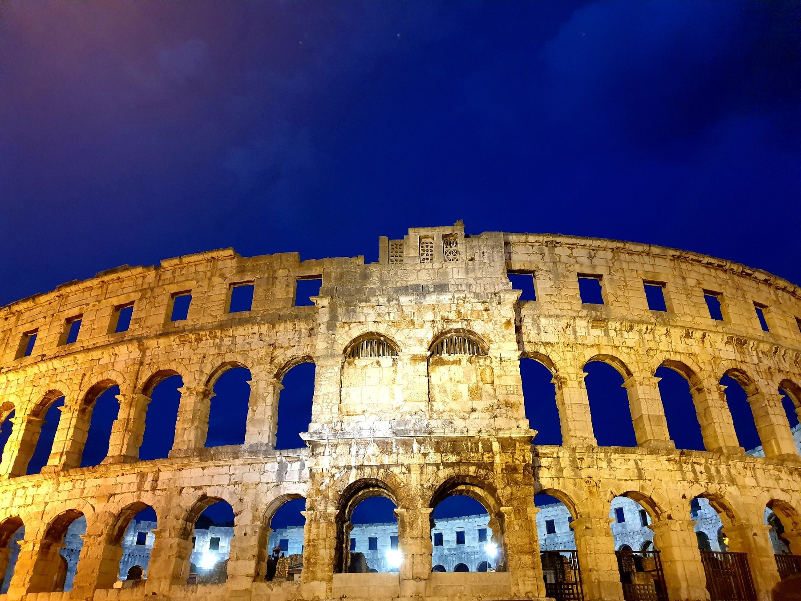
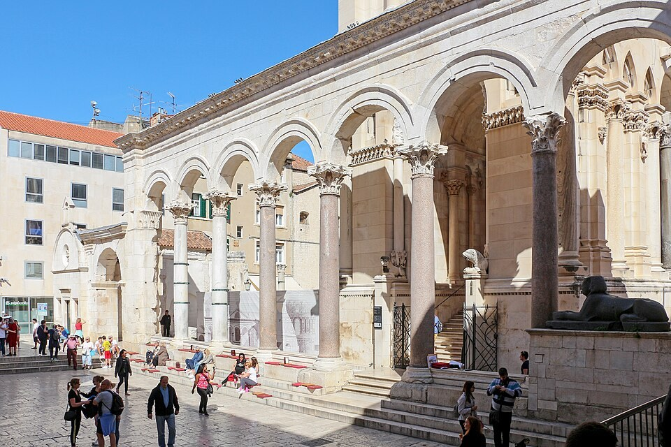
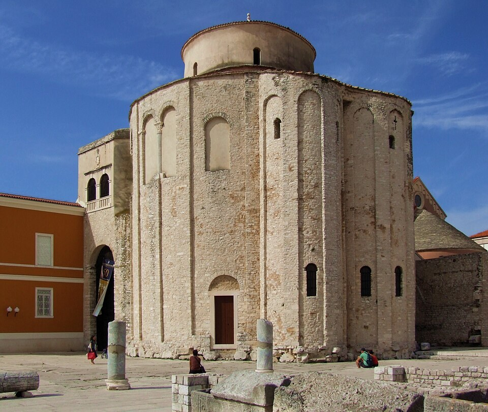
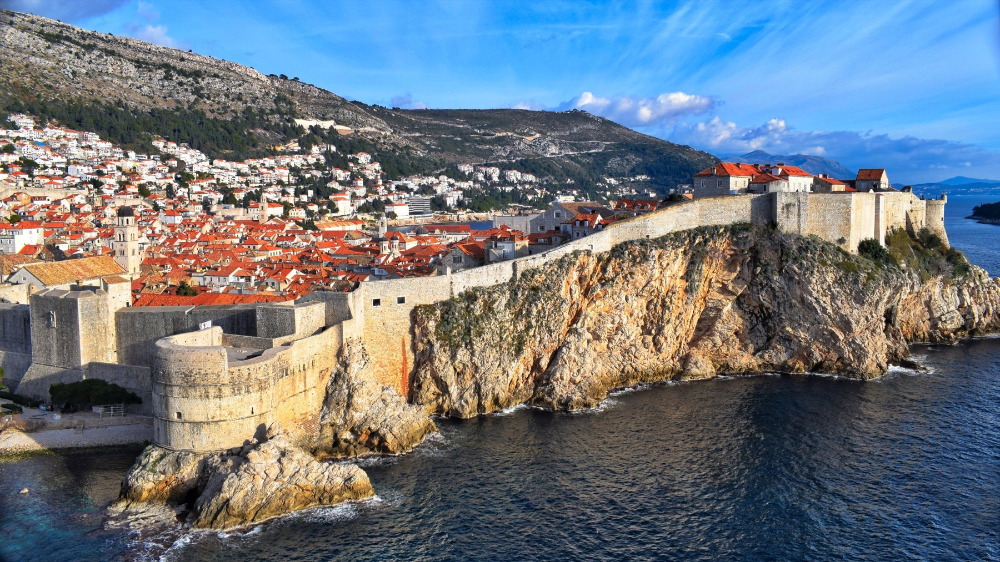
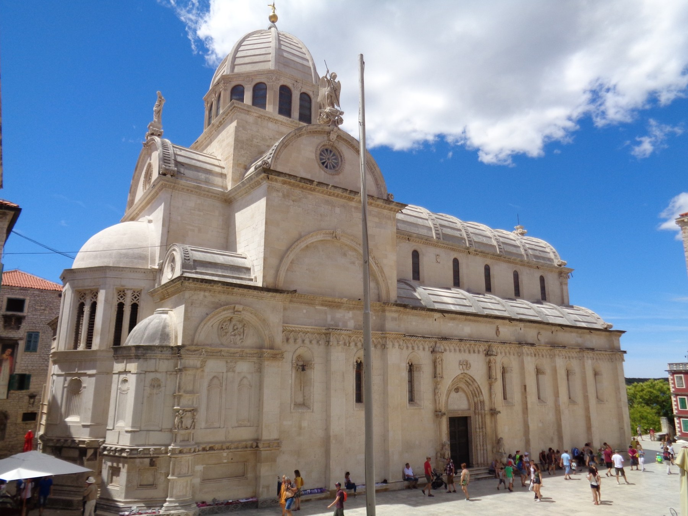

Истрия
Римское наследие, средневековые города, многовековое влияние Венеции и Центральной Европы.
Тысячелетия истории между Адриатикой и Центральной Европой — от древних культур и Римской империи до средневекового королевства и современной Хорватии.

История современной Хорватии формировалась на пересечении Адриатики, Центральной Европы и Балкан. Истрия, Далмация, Дубровник, Славония и север страны на протяжении веков входили в разные политические и культурные пространства. Поэтому историю Хорватии невозможно свести к одной линии — она складывается из множества региональных историй, языков, городов, государств и традиций.
Основные эпохи, которые сформировали страну и её культурное наследие.
Неандертальцы Крапины, Вучедольская культура и древние поселения оставили богатое археологическое наследие.
Истрия и Далмация становятся частью римского мира. Пула, Салона и будущий Сплит сохраняют масштабные следы античности.
Формируются раннесредневековые хорватские княжества, а затем королевство.
Хорватские земли развиваются в тесной связи с Центральной Европой и Адриатикой, а города Далмации становятся важными культурными центрами.
Разные части хорватских земель оказываются в различных политических системах, что формирует ярко выраженные региональные различия.
Эпоха национального возрождения, культурной модернизации и формирования современного национального самосознания.
Монархическая Югославия, Вторая мировая война и социалистическая Югославия становятся ключевыми этапами сложного XX века.
Провозглашение независимости, война 1990-х, восстановление страны и развитие современной Республики Хорватия.
Исторический опыт разных регионов Хорватии заметно различался. Средиземноморское наследие особенно сильно проявляется на Адриатике, тогда как север страны веками был тесно связан с Центральной Европой.

Римское наследие, средневековые города, многовековое влияние Венеции и Центральной Европы.
Античные города, раннее христианство, средневековые коммуны и сильная адриатическая культурная традиция.
Город-республика, сформировавший самостоятельную дипломатическую, торговую и культурную традицию.
Континентальная Хорватия, где особенно заметны центральноевропейские, османские и габсбургские исторические слои.
Средневековые города, дворянские резиденции, барокко и тесные связи с Центральной Европой.
Вводный материал
Происхождение хорватов остаётся одной из самых интересных загадок ранней европейской истории. Хорватский язык принадлежит к славянской языковой семье, однако происхождение самого имени Hrvat сложнее: важные лингвистические и эпиграфические данные связывают его с ирано-сарматским миром Северного Причерноморья. Современные исследования поэтому рассматривают формирование хорватов как многослойный процесс, в котором взаимодействовали славянские, степные и местные балканские элементы.
Изучить происхождение
Доисторическая эпоха
История земель современной Хорватии начинается задолго до письменных источников. Археологические находки Крапины, Вучедола и других памятников позволяют проследить жизнь людей здесь на протяжении тысячелетий.
Изучить доисторическую эпоху
Античность
Побережье Адриатики стало важной частью Римской империи. Города, дороги, амфитеатры, храмы и дворцы античного времени до сих пор определяют облик некоторых хорватских городов.
Открыть античность
Поздняя античность
В начале IV века император Диоклетиан построил на далматинском побережье огромный дворцовый комплекс. Со временем его стены и здания стали частью исторического центра современного Сплита.
История дворца Диоклетиана
Раннее Средневековье
В раннем Средневековье на восточном побережье Адриатики и в континентальных землях формируются новые политические центры и христианская культура, связанные с появлением хорватских княжеств и королевства.
Изучить раннее Средневековье
Средневековье и Адриатика
Далматинские города развивали торговлю, архитектуру и собственные городские традиции. Особое место занял Дубровник, ставший одним из важнейших политических и культурных центров Адриатики.
Перейти к средневековой истории
Ренессанс и раннее Новое время
Ренессанс, барокко и новые политические границы оставили разные следы в Далмации, Истрии, Славонии и северной Хорватии.
Изучить раннее Новое времяXIX век
XIX век становится временем культурной модернизации, языковых дискуссий и формирования национальных институтов, сыгравших важную роль в современной хорватской идентичности.
Перейти к XIX векуXX век
Первая мировая война, создание югославского государства, Вторая мировая война, социалистическая Югославия и политические изменения конца века сделали XX столетие одним из самых сложных периодов хорватской истории.
Изучить XX векСовременная Хорватия
В 1991 году Хорватия провозгласила независимость. В последующие десятилетия страна прошла через войну, восстановление и глубокую политическую, социальную и культурную трансформацию.
Современная историяИногда один предмет рассказывает об эпохе больше, чем десятки дат.
около 1100 года
Один из важнейших памятников ранней хорватской письменности и культуры, созданный с использованием глаголицы.
Медный век
Керамический сосуд в форме птицы — один из узнаваемых символов вучедольской культуры.
Средневековье
Рукописная традиция, в которой сохранились язык, богослужебные тексты и память местных общин.
Античность
Арки амфитеатра хранят память о масштабах и общественной жизни римского города.
Поздняя античность
Императорская резиденция начала IV века стала частью живого исторического центра Сплита.
Средневековье и раннее Новое время
Каменные стены и городская архитектура рассказывают о морской торговле и самостоятельной традиции Дубровника.
Прошлое Хорватии сохранилось не только в книгах и музеях. Оно продолжает жить в структуре городов, архитектуре и культурном ландшафте.
Римский амфитеатр
Евфразиева базилика
Дворец Диоклетиана
Св. Донат и исторический центр
Средневековый город
Собор Св. Иакова
Исторический город и стены
Античный культурный ландшафт острова Хвар
Письменность, архитектура, музыка, религиозные традиции, кухня и городская культура Хорватии формировались на протяжении веков. Продолжить знакомство можно через отдельные темы культурного наследия.
Это зависит от того, о каком периоде идёт речь. Хорватские княжества сложились в раннем Средневековье, а королевство — в X веке. Современная Республика Хорватия провозгласила независимость в 1991 году.
Эти земли населяли разные древние общности, в том числе группы, которые античные авторы называли иллирийцами. На Адриатике существовали греческие поселения, а позднее большая часть территории вошла в римский мир. К приходу славян в VI–VII веках здесь сохранялось население с римским культурным наследием.
Возникновение королевства обычно связывают с Томиславом и 925 годом.
Адриатическое побережье развивалось благодаря морским связям и долго испытывало влияние Византии и Венеции. Северные земли были теснее связаны с Венгрией и державой Габсбургов. Различия в политической принадлежности, торговле и городской культуре сформировали особые региональные традиции.
Это аристократическая городская республика с центром в Дубровнике, известная также как Рагуза. Её благополучие опиралось на морскую торговлю и дипломатию, позволявшую сохранять широкую самостоятельность между более крупными державами. Республика была упразднена в 1808 году.
25 июня 1991 года хорватский парламент принял решение о суверенитете и независимости. После трёхмесячного моратория, 8 октября 1991 года, были окончательно разорваны государственно-правовые связи с Югославией. Становление независимого государства сопровождалось войной и последующим восстановлением.